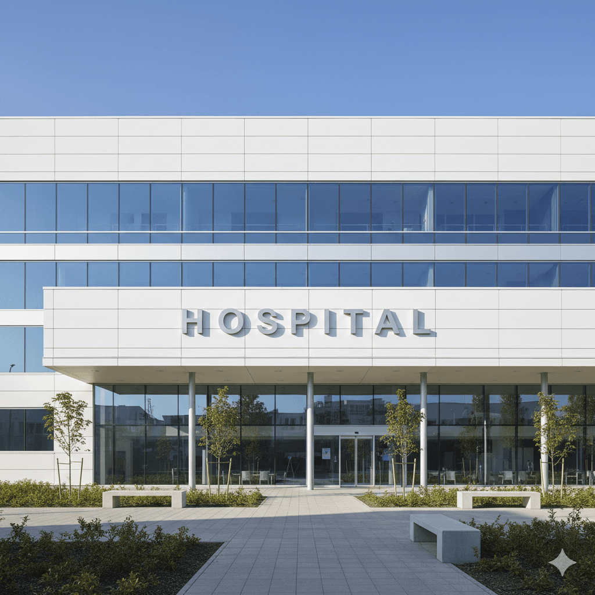

Processamento dos documentos da reclamação
O SofIA ingere automaticamente todos os arquivos relacionados à reclamação — PDFs, imagens escaneadas e e‑mails — e aplica OCR avançado para extrair texto estruturado.

CASE / SofIA / ANS
O SofIA foi criado para auxiliar a Agência Nacional de Saúde Suplementar (ANS) a tratar o número crescente de queixas dos usuários de operadoras de saúde no Brasil

O SofIA automatiza processos e oferece suporte ao analista, contribuindo para aumentar a eficiência das análises de cada caso.
O SofIA ingere automaticamente todos os arquivos relacionados à reclamação — PDFs, imagens escaneadas e e‑mails — e aplica OCR avançado para extrair texto estruturado.
A partir do conteúdo extraído, o sistema analisa semanticamente cada reclamação e a classifica segundo os critérios definidos pela ANS.
Por fim, o SofIA compila um relatório completo contendo os principais achados e um parecer preliminar sobre a reclamação, pronto para conferência e edição pelo analista.


Fundada em 2017, a NeuralMind une pesquisa e engenharia para criar soluções de IA aplicadas aos desafios das empresas.
Organizamos documentos e conhecimento para apoiar análises com fontes e contexto do negócio.
Pesquisadores e engenheiros transformam avanços em IA em soluções para problemas reais das empresas.
Automatizamos tarefas repetitivas para que os especialistas se concentrem na análise, na revisão e na decisão.
Somos uma empresa filha da Unicamp, com uma trajetória que une pesquisa acadêmica e desenvolvimento de tecnologia.